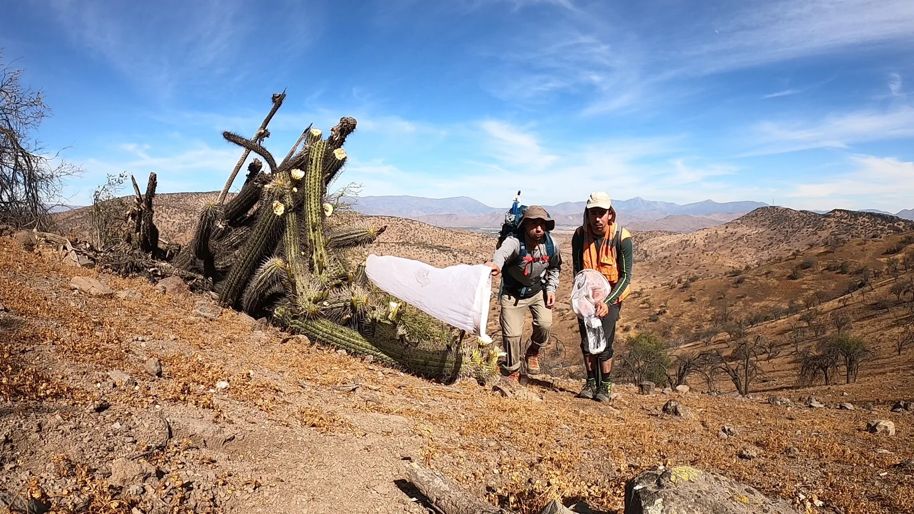
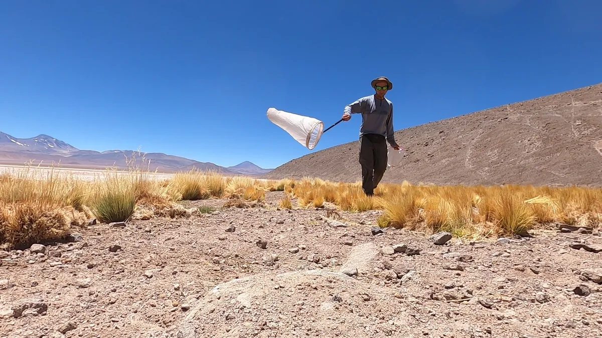

Misión
Proporcionar servicios de consultoría ambiental de excelencia, basados en investigación científica rigurosa, mientras fomentamos la educación y conciencia ambiental en la comunidad.

Nuestra empresa
Integramos ciencia, educación y consultoría ambiental en proyectos desarrollados a lo largo de Chile.
Nuestra historia
Con el propósito de integrar el rigor de la ciencia, la educación y la consultoría ambiental, convencidos de que el conocimiento es la base para construir un desarrollo verdaderamente sostenible.
Fundada por Luis E. Carrera Suárez, biólogo especialista en invertebrados y consultor ambiental con más de 12 años de experiencia en investigación y evaluación de ecosistemas, nuestra empresa ha desarrollado proyectos en una amplia diversidad de ambientes a lo largo de Chile.
Nuestra experiencia se extiende desde los ecosistemas desérticos del norte hasta los bosques templados del sur, e incluye estudios de línea base para proyectos sometidos al Sistema de Evaluación de Impacto Ambiental (SEIA), monitoreos de biodiversidad, identificación taxonómica y programas de educación ambiental.
En cada proyecto trabajamos con un firme compromiso por la excelencia técnica, la ética profesional y la generación de información confiable que contribuya a la conservación de la biodiversidad y a la toma de decisiones responsables.
Propósito
Una forma de trabajar basada en ciencia, responsabilidad y compromiso con cada territorio.
Proporcionar servicios de consultoría ambiental de excelencia, basados en investigación científica rigurosa, mientras fomentamos la educación y conciencia ambiental en la comunidad.
Ser una empresa referente en consultoría ambiental en Chile, reconocida por la calidad científica de nuestro trabajo y nuestro compromiso con la sostenibilidad ambiental.
Integridad científica, responsabilidad ambiental, compromiso con la comunidad, excelencia profesional y sostenibilidad en cada proyecto.

Dirección científica
Biólogo especialista en invertebrados, investigador y consultor ambiental.
Su experiencia combina evaluación de ecosistemas, levantamientos de fauna, taxonomía y producción científica. Esta mirada técnica orienta el estándar metodológico de cada proyecto de Caminando Otro Sendero.
Ver publicaciones científicasNuestro trabajo
Revisa las soluciones que desarrollamos para empresas, consultoras y comunidades.